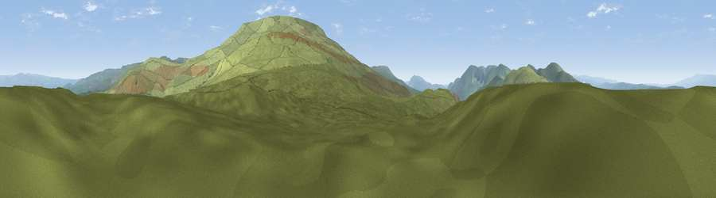

Viewpoint near Ravenstonedale
#7307 in England · top 20% of its area beats it · near Ravenstonedale · open accessWhere it is
The exact computed spot (NY 74400 00425). Click the marker for map links.
Public access: this spot lies on mapped open-access land (CRoW Act 2000) — you may roam here on foot. Computed from Natural England's CRoW access layer and OpenStreetMap rights of way — not the legal definitive map. Always verify locally.
The view, rendered

A 360° render of this exact spot computed from the terrain model, tree cover and land cover — summer colours, afternoon light, calibrated against photographs of famous viewpoints. Real trees, hedges and buildings will differ in detail.
The panorama
Grey silhouette: terrain skyline in each direction (720 bearings, Earth curvature and refraction included). Dashed green: skyline with trees (+15 m) and buildings (+8 m) as obstacles. Blue strip: how far the ground is visible on each bearing.
Where the view opens
Wedge length = distance to the farthest visible ground on that bearing (vegetation-aware). Rings at 10, 25 and 50 km.
What fills the view
99% grassland · 1% woodland
Angular shares of the visible panorama (visual magnitude), not map area. Landscape diversity 0.04 (0–1 Shannon).
Key numbers
More beautiful places nearby
The staircase of upgrades: each row has a higher view potential than everything closer. Driving times are estimates from straight-line distance, calibrated against real road routing — check an actual route before setting out.
| Place | Direction | Drive | Score |
|---|---|---|---|
| Wild Boar Fell | SE · 2 km | ~5 min | 75.0 |
| Viewpoint c9983_7527 | SE · 2 km | ~6 min | 76.3 |
| Viewpoint c10024_7603 | E · 6 km | ~12 min | 76.9 |
| Calders | WSW · 9 km | ~17 min | 79.0 |
| Calf Top | SSW · 17 km | ~29 min | 79.8 |
| Crag Hill | SSW · 18 km | ~31 min | 80.0 |
| Viewpoint near Bampton | WNW · 31 km | ~48 min | 80.4 |
| Ill Bell | WNW · 32 km | ~49 min | 80.9 |
54.39864, -2.39582 · source: screening · position refined by local search. Computed location — check access rights before visiting.